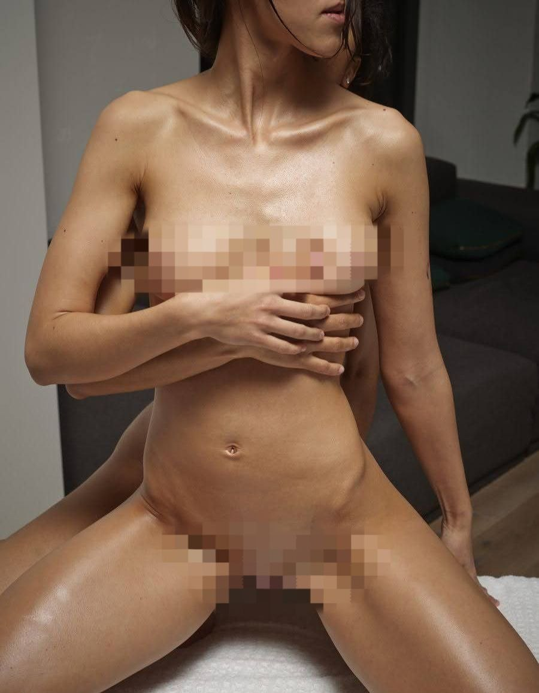
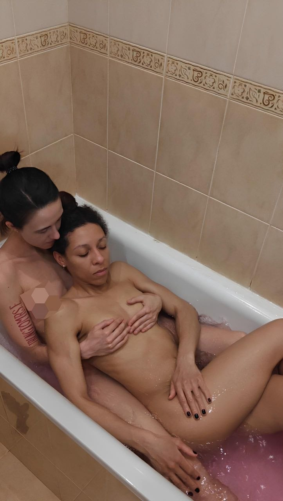
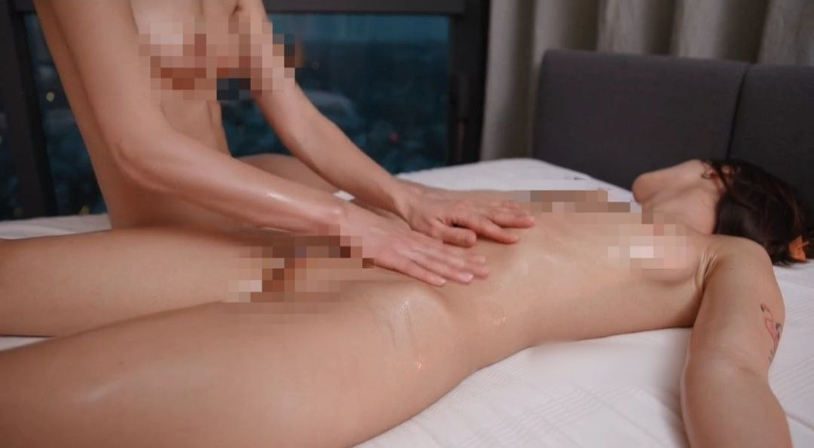
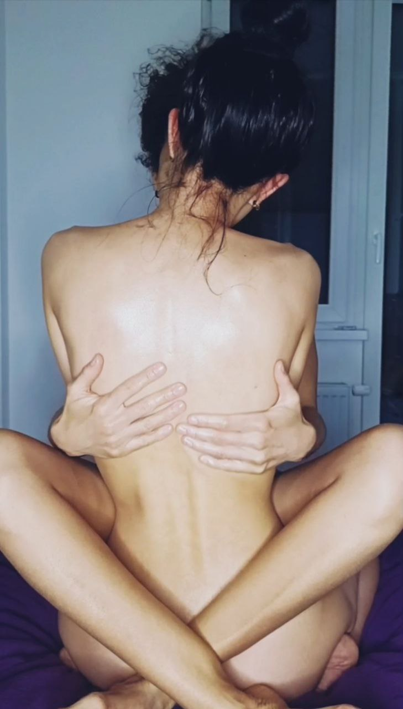
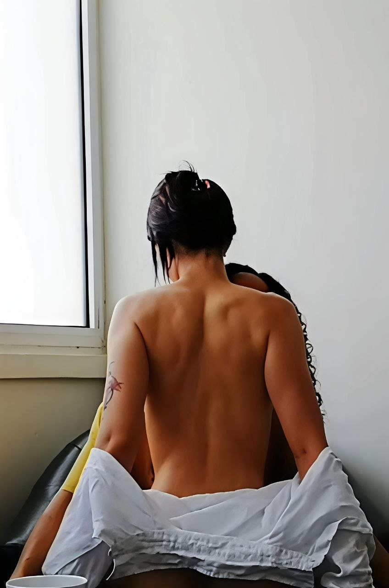
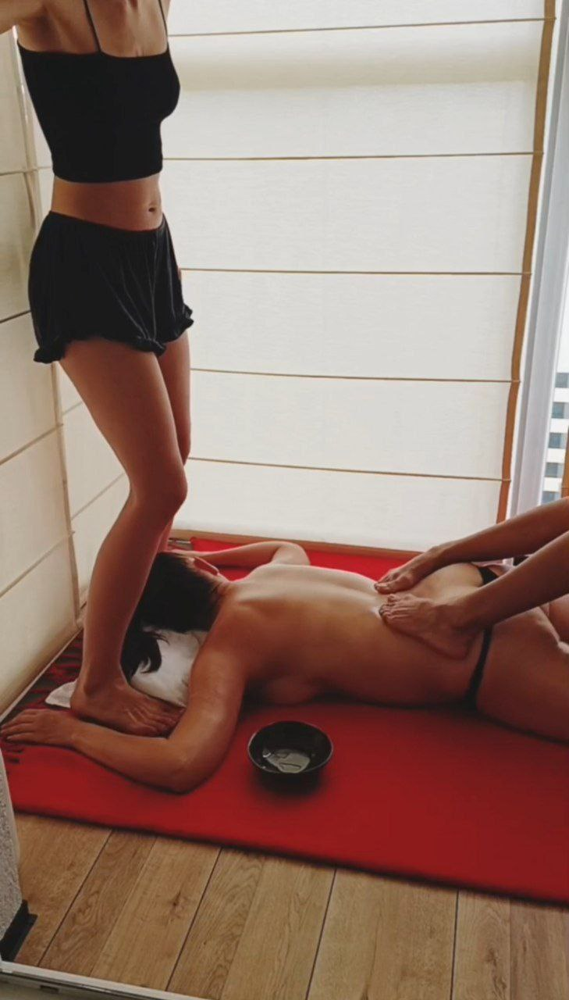
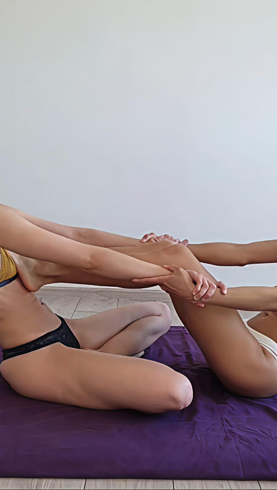
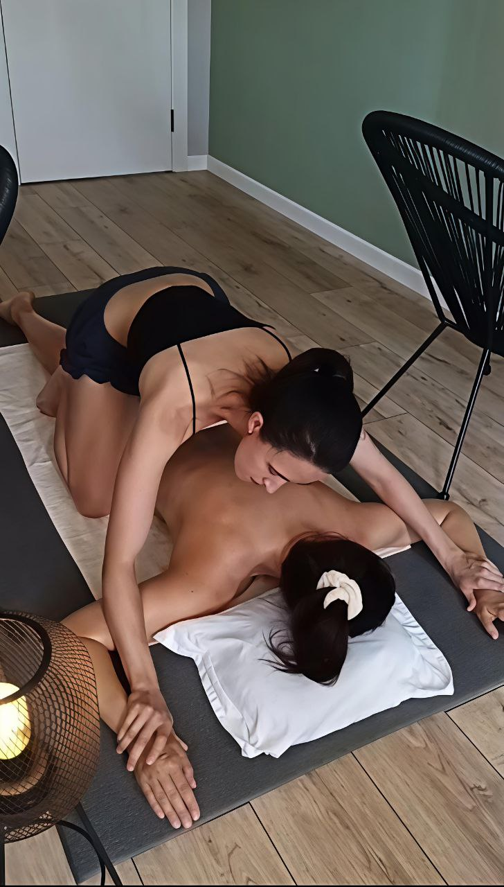
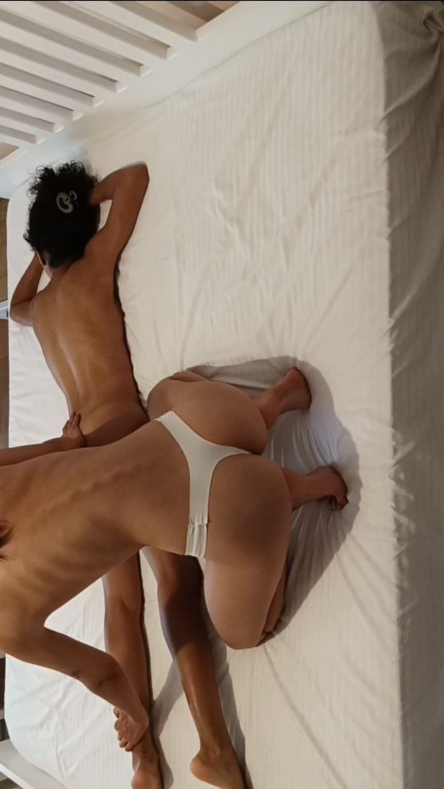
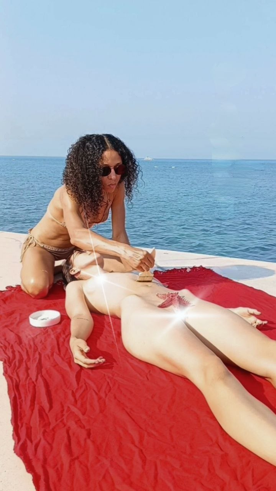
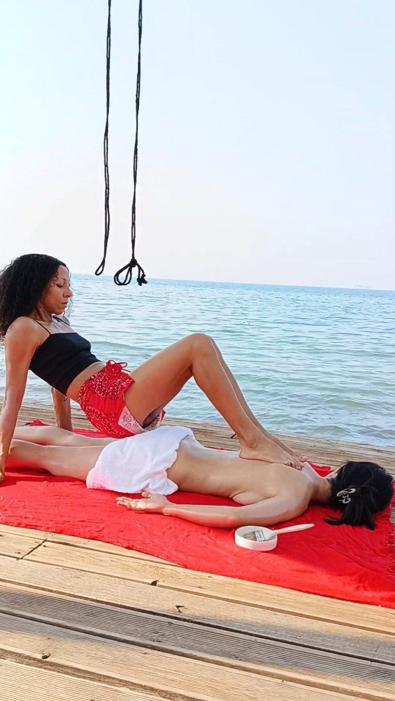
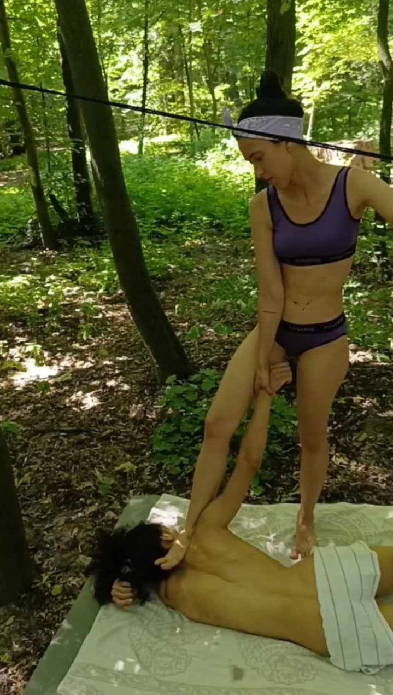
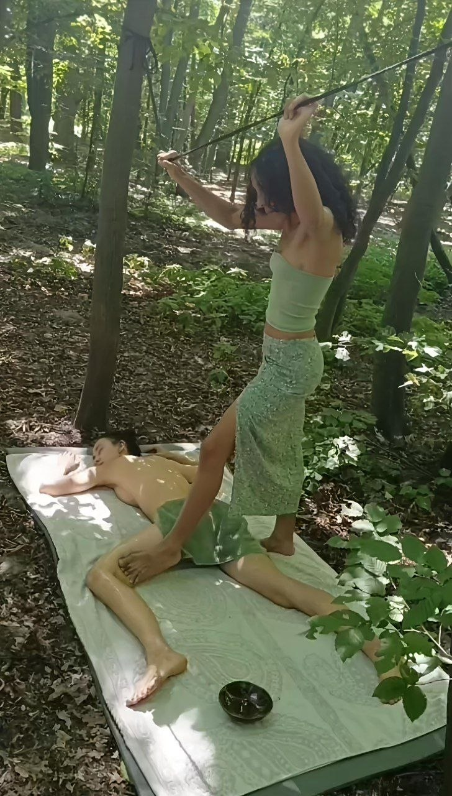
Same-day booking
We conduct sessions for only one man or one woman.
You can choose a ritual not only for yourself, but also as a gift for the woman you love. Sometimes the best
gift isn't a new dress, but the opportunity to feel cared for. The rest shouldn't be conveyed by our
advertising, but by her state of mind after the meeting. Everything she takes with her after this ritual, you
will eventually feel too.
Yes. This is part of the experience. We guide the process carefully, and you naturally feel where touch is welcome and where it would disturb the rhythm
Our ritual can be chosen not only for yourself, but also as a gift for someone you care about. Sometimes the
best gift isn't a new possession, but the opportunity to experience genuine care, attention, and deep
relaxation.
The rest will be spoken not by our words, but by his or her state after the experience.
No
Our main location is Scandinavia, there we spend most of our time, but we often visit other countries. Follow our stories on Telegram, Instagram and announcements to have the opportunity to meet us and hug us on our next visit